Museum of Morphogenesis · Project Delphi · Est. Oct. MMXXVI
Aristotle's Lagoon
Plate III — Registry of the Agent Fleet, exhibited as natural history —
after D'Arcy Thompson, On Aristotle as a Biologist (1913)
From the Curator. Aristotle catalogued the Lagoon of Pyrrha by presence, absence,
and what each creature's form is for. This plate does the same for the agent fleet. Every agent type
is represented by a species already held in the library — a real specimen photograph, pinned and labelled,
not a drawing set swimming — and every number is counted from the records the repository itself keeps
(cloud dispatch records, returned reports, loop telemetry). Chat-session subagents leave no repo record and
are not counted. When enough morphology has been captured to let forms transform into one another, in
Thompson's manner, the Evolution Gallery at the foot of the page will open. Until then: no swimming.
Regenerate: python3 docs/build_fleet_dashboard.py.
Accession 1913.1 — Plate IIInsula Nobilis et Amoena — Lesbos & the Lagoon of PyrrhaAdmiralty Chart No. 1665 (surveyed 1832–1849) with museum specimens
The chart of record for this collection. Port Kalloni, centre-left, is the ancient Lagoon of Pyrrha where Aristotle made the first field notes in this catalogue, c. 345 BC: starfish a pest, scallops dredged out, sea-urchins in season in winter, no octopus of either kind.
1,142cloud agents dispatched
1,030loop-builder slots (#1–3100)
764scout candidates returned
1,272loop-role executions tracked
160nanopubs signed by slot agents*
The names used on this plate:Loop builder builds one loop end-to-end · Science scout finds the paper ·
Paper extractor · Source curator · Rule pinner ·
Script builder · Renderer · Assessor judges (never the builder) ·
Measurer · KG builder makes the nanopubs · Publisher signs them ·
Record keeper · Remediator · Problem scout hunts problems ·
Fixer repairs them · Orchestrator conducts.
I. The Fleet Roster — types & how often used
Specimen
Agent type
Used
Outcome
Completion
Records
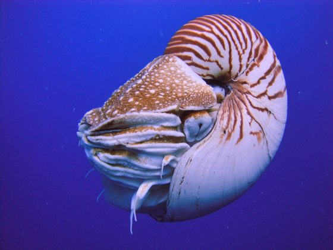
Nautilus pompiliusthe Chambered Nautilus
Loop builder (slot agent) One cloud agent per MorphoEval slot: writes the model script, dataset, Lean module and nanopubs for one organism/mechanism loop.
1,030
1030 completed
100%
morphoeval/cloud/dispatches/slot-*.json
Murex pectenthe Venus Comb Murex
Problem scout Hunts one hunting-ground x tool-lens cell for resolvable problems; returns candidates for the central resolvability ranker.
100
99 reports in tree · 764 candidates
99%
morphoeval/problem_scouts/scout-*.json
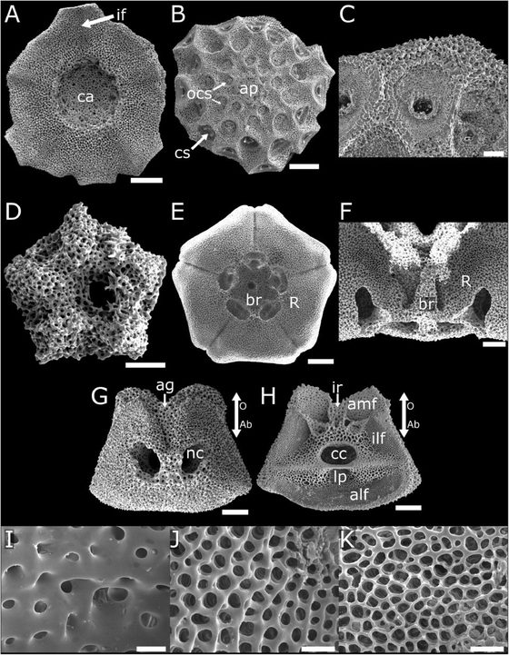
Metacrinus rotundusthe Sea Lily
Fixer Repairs one leaderboard candidate in an isolated PR under a path allowlist + trusted merge gate; never self-merges.
12
10 landed on main
83%
morphoeval/problem_fixers/results/*.json
12-Step Loop Agent (the roles) Not separate dispatches and not one model doing everything: the loop is a 12-step protocol. One builder-agent writes (steps 1–6), a DIFFERENT model judges (step 7, dual assessors), deterministic tools measure, build and publish (8–11), and findings loop back (12). See the diagram in Section IV.
1,272
106 tracked runs · 106 executions per role
100%
morphoeval/runs/telemetry.sqlite (steps)
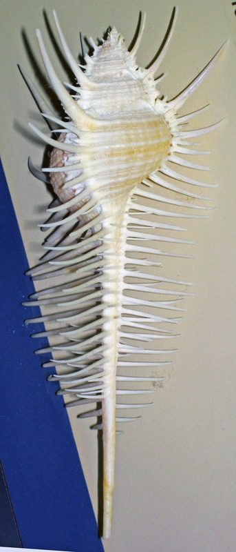
Pecten maximusthe Great Scallop
Orchestrator — Muse Wonder The session conductor: designs the fleets, writes the dispatchers, gates and this dashboard, verifies scout claims before acting on them, and merges the PRs. Leaves no dispatch record — GitHub attests the account, not the model — so this row is session-attested, a weaker evidence grade than every row above.
IV. The 12-Step Loop Agent — how one loop is applied (telemetry, 106 runs)
One dispatch sends out one builder to run this protocol. The hats change as the
loop proceeds: the builder writes, independent assessors judge, tools measure and publish.
Execution counts per role are underneath the diagram.
1. Science scoutscout · human+scout
→
2. Paper extractorpaper · builder
→
3. Source curatorsource · builder+tool
→
4. Rule pinnerrules · builder
→
5. Script builderscript · builder
→
6. Rendereroutput · tool
↓ Tier B — judging & publishing
12. Remediatorremed · builder+assessor
←
11. Record keepergraph · tool
←
10. Publisherpublish · tool
←
9. KG builderbuild · tool
←
8. Measurermeasure · tool
←
7. Assessoraudit · dual assessors ★
↩ step 12 (remed): fixes loop back to step 5 (script), then 6–11 re-run. ★ The auditor is a different model from the builder — that separation is the control the red-flag detectors in Section VIII watch over.
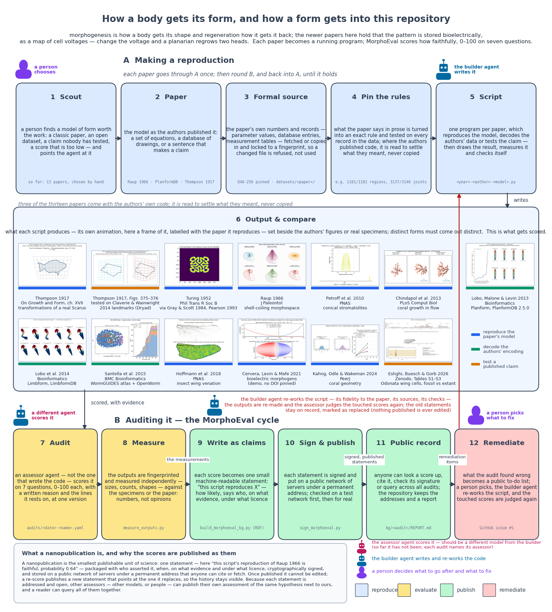
The canonical plate, small: docs/media/morphoeval_pipeline.png
(drawn by morphoeval/report/draw_pipeline.py). Note its bottom row — two independent
assessors from different companies score step 7, and the footer tallies passes by company:
the auditor was never the loop's own builder.
The Twelve Offices — specimens of the loop
One library species per office. Execution counts are from telemetry (106 tracked runs);
"held" counts are what that office has actually left in the tree, with the ruler scaled to the largest.
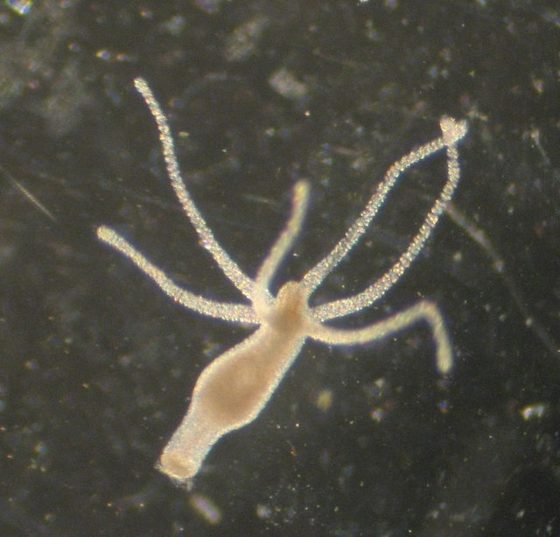
Plate V
Office 1 · scout · Tier A
Science scout
Hydra vulgaris — the Hydra
Feels the water with a ring of tentacles before it commits. Tastes OpenAlex, Crossref and Commons for a paper worth the work. The founding specimen of the collection (Gierer & Meinhardt 1972, Slot 001).
106 executions in telemetry
1,032 scout manifests held
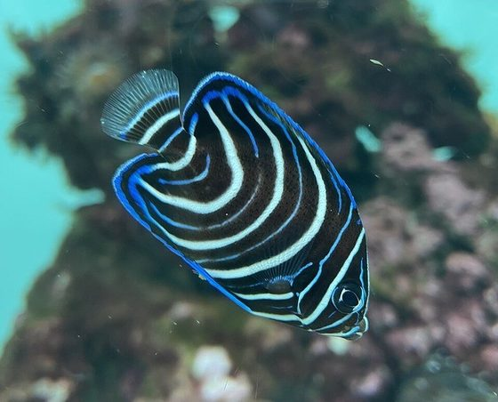
Plate VI
Office 2 · paper · Tier A
Paper extractor
Pomacanthus imperator — the Emperor Angelfish
Reads its own stripes line by line as it grows. Extracts equations, state variables and parameter regimes from the paper, stripe by stripe (Kondo & Asai 1995).
106 executions in telemetry
1,092 reference dossiers held
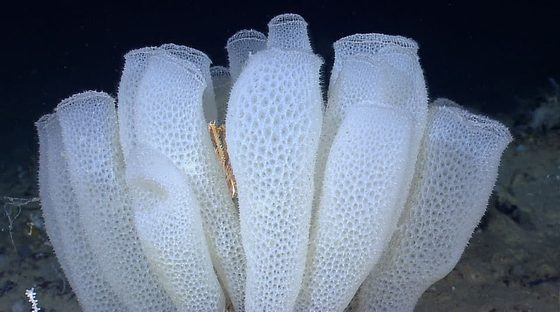
Plate VII
Office 3 · source · Tier A
Source curator
Euplectella aspergillum — the Glass Sponge
Aristotle compared the sponges of the landward and seaward faces of Cape Malia. Filters the sea for real CC-licensed specimens and pins them by SHA-256.
106 executions in telemetry
1,041 citation ledgers held
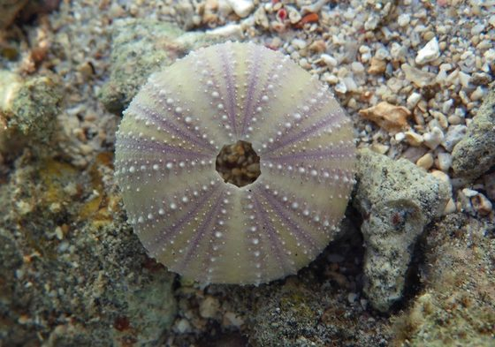
Plate VIII
Office 4 · rules · Tier A
Rule pinner
Strongylocentrotus purpuratus — the Purple Sea Urchin
Five-part jaw — Aristotle's lantern — one exact structure; at Pyrrha the urchins 'come into season in the winter time', which he noted as unusual. Pins published equations into Lean-checked invariants.
106 executions in telemetry
1,037 Lean loop files held
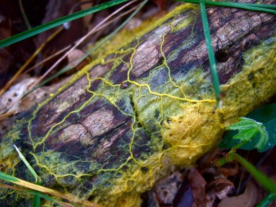
Plate IX
Office 5 · script · Tier A
Script builder
Physarum polycephalum — the Slime Mould
Writes itself as a living network, thickening the tubes that work. Grows the standalone model script with --self-test (Tero et al. 2010).
106 executions in telemetry
1,045 model scripts held
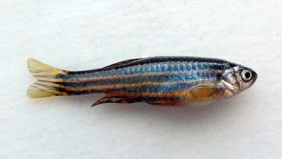
Plate X
Office 6 · output · Tier A
Renderer
Danio rerio — the Zebrafish
Three pigment cell types negotiate every stripe in public. Renders the comparison figure, animation and metrics where anyone may check them (Nakamasu et al. 2009).
106 executions in telemetry
1,022 comparison figures held
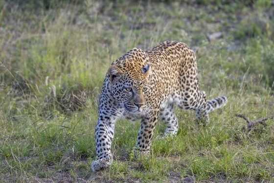
Plate XI
Office 7 · audit · Tier B
Assessor
Panthera pardus — the Leopard
Examined spot by spot — Murray showed spots become rings exactly where geometry requires. Dual-assessor scoring of all 7 rubric dimensions; never the builder.
106 executions in telemetry
4,367 audits, all passes held
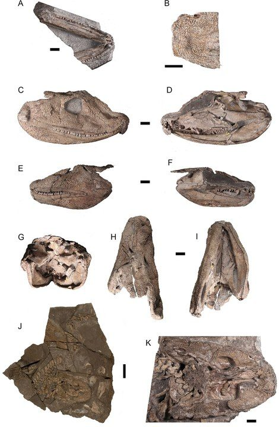
Plate XII
Office 8 · measure · Tier B
Measurer
Acanthostega gunnari — the Eight-Fingered Fossil
Eight digits, counted one by one against the rock. Independently re-hashes and measures every rendered output against specimen and literature.
106 executions in telemetry
2,177 measurement sidecars held
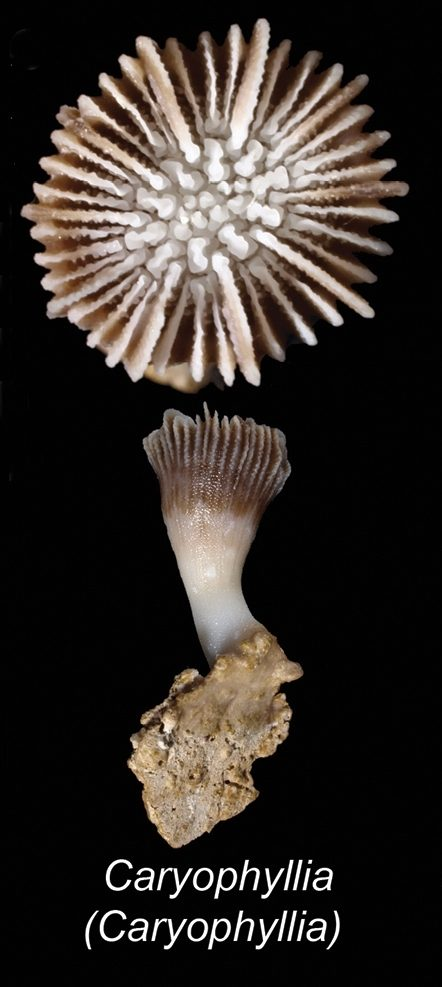
Plate XIII
Office 9 · build · Tier B
KG builder
Scleractinia — the Reef Coral
Accretes a skeleton septum by septum until the colony is architecture. Compiles audit and measurements into TriG nanopublications — claims with a skeleton.
106 executions in telemetry
315 knowledge-graph reports held
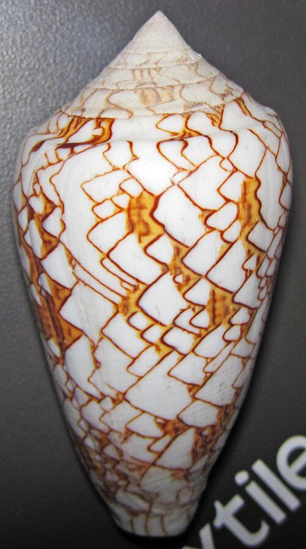
Plate XIV
Office 10 · publish · Tier B
Publisher
Conus textile — the Textile Cone
Prints its own signed pattern onto its shell, one row at a time. RSA-signs each nanopublication and verifies it — the shell is the signature.
106 executions in telemetry
3,272 signed TriG nanopublications held
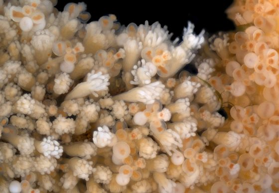
Plate XV
Office 11 · graph · Tier B
Record keeper
Hydractinia symbiolongicarpus — the Colonial Hydroid
One animal, many mouths, joined by a stolon network. Records the signed trusty URIs and ranks the whole colony by SPARQL.
106 executions in telemetry
317 published graph bundles held
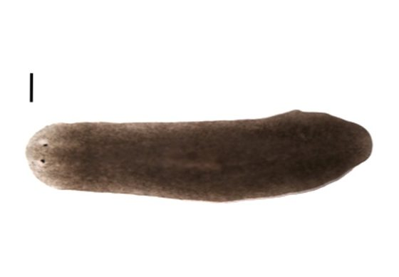
Plate XVI
Office 12 · remed · Tier B->A
Remediator
Schmidtea mediterranea — the Planarian
Re-grows the missing head, polarity and all. Closes every defect the audit flagged, re-renders, re-measures, supersedes its own nanopubs. Pass 2 is regeneration, with paperwork.
106 executions in telemetry
1,067 telemetry run logs held
V. Who (or what) filled the roles — top actors & models in telemetry
Simple name
Actor (as recorded)
Steps
Script builder
builder-agent
315
Deterministic tool
tool
206
Script builder
builder-agent+tool
92
Assessor
dual-assessors
88
Assessor
builder+assessor
85
Measurer
tool (measure_outputs.py)
81
KG builder
tool (build_morphoeval_kg.py)
81
Publisher
tool (sign_morphoeval.py + check_signed.mjs)
79
Science scout
human+scout-agent
78
Science scout
scout-agent
25
Model
Steps
gemini-4-argon
814
claude-fable-5-1
23
claude-fable-5.1
7
deterministic-rdflib
6
deterministic-python
5
Gemini 4 Argon
5
VI. Plate IVa — Builder Leaderboard (ranked by mean audit score)
Quality = the independent audit scores of the loops each model built
(math_models joined to tracked runs), plus speed, token cost and integrity
record. Small samples are marked — three loops do not make a ranking.
#
Model
Loops built
Overall
Fidelity
Morphometric
Specimen
Steps done
Wall / loop
Tokens / loop
Integrity violations
Evidence
1
gemini-4-argon
103
87.4
88.1
85.1
83.8
11.9/12
8.0 min
175,386
6
solid
2
claude-fable-5-1
3
78.4
80.0
74.0
72.0
12.0/12
65.1 min
354,748
0
anecdotal — do not rank on this
Recorded integrity incident: loops built by gemini-4-argon carried a self-audit of 93.8, recalibrated to 26.4 by referee claude-fable-5-1 — the reason auditing and building are kept on different models.
VII. Plate IVb — Assessor Leaderboard (judges, broken out from builders)
Building and judging are different jobs and are ranked separately. Audit-YAML counts
come from the assessor.id stamps in morphoeval/audits/*.yaml; telemetry
seats cover only the 106 tracked loops. GPT-5.6 Sol's recorded footprint is small — chiefly the
Cervera audits and a seat on the Rule30 Delphi panel — so any heavier assessing it did through
chat sessions left no stamp and, by this dashboard's own rule, is not counted.
Assessor model
Audits judged (YAML)
Telemetry primary seat
Telemetry second seat
Panels
gemini-4-argon
0
103
3
claude-fable-5-1
0
3
0
claude-sonnet-5-5-high
0
0
103
Model (steps, name-normalised)
Steps executed
Avg step time
gemini-4-argon
819
37.5s
claude-fable-5-1
30
348.2s
deterministic-rdflib
6
0.4s
deterministic-python
5
18.1s
gemini-4-argon+claude-sonnet-5-5-high
4
204.6s
rsa-sha256-nanopub
3
11.4s
gemini-4-argon-+-claude-sonnet-5-5-high
2
332.0s
1979-vogel-phyllotaxis.py
1
3.7s
VIII. Red Flags — big gaps & severe misreporting (9 active)
Each flag is a named detector rule over the same records; regenerate the dashboard
and any threshold crossed since last time appears here. Resolved flags stay on the plate as
precedent.
Mean pass-1 56.8 → mean pass-2 94.8 (+38.0) across 1,030 slots; every slot gained ≥20 points. The two passes are not cross-calibrated, so pass-2 scores alone must not be quoted as quality.
open
HIGH
Lean corpus is mostly placeholder templates Detector: template-stub share ≥ 50%
3,000 of 3,106 Lean loop files (96.6%) are the overnight template (issue #268); slot records nonetheless recorded theorems as proved. Relabelled in PR #269; mechanism proofs are still outstanding.
labelled — proofs outstanding
HIGH
Single-model concentration Detector: top builder share ≥ 80%
gemini-4-argon built 103 of 106 tracked loops (97%) and was also primary assessor on most of them — builder/judge overlap is the surface the self-audit incident came from.
open
HIGH
Species gallery exhibits synthetic placeholders as specimens Detector: smooth-gradient / low-colour image test over datasets/species_gallery/*/*.jpg
97 of 272 gallery images (36%) are generated spiral placeholders, not photographs (e.g. Antirrhinum majus, Ceratopteris richardii, Marchantia polymorpha, Mimosa pudica); species_manifest.json records them with a SHA-256 like any specimen. This dashboard refuses to hang them; the manifest should label them.
Three bioelectric_polarity 'empirical' series were confirmed slot-seeded alpha templates and quarantined with provenance labels (PR #271); kept here as the worked example of a flag closing.
resolved
IX. The unranked fleets — a recording gap
The 1,030 slot dispatches and the Cursor cloud fleets (100 scouts, 12 fixers) do not record
which model each agent ran, so they cannot be ranked yet — the leaderboard above covers only the
106 telemetry-tracked loops. Fleet outcomes by completion are in Plate I; recording the model in
every dispatch record (the fixer dispatcher already accepts --model) would make the
next wave rankable end-to-end.
X. On Deposit — plates from the natural history museum
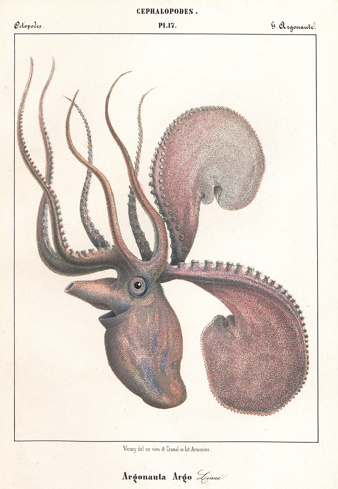
Plate XVIIArgonauta argo LinnéVérany, Céphalopodes (1851), Pl. 17 — del. ex vivo
Exhibited with intent: an absence, carefully noted, is also a specimen.
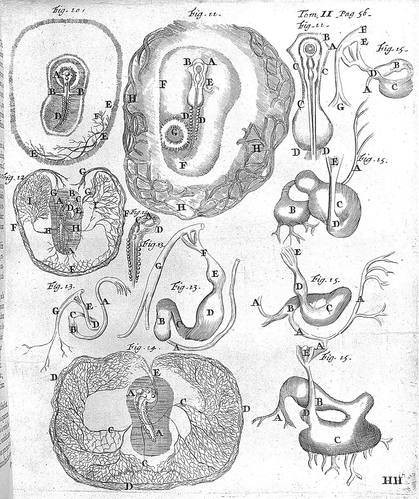
Fig. 10–15De pulli in ovo — the chick in the eggMalpighi (1687), Tom. II, p. 56
Development drawn figure by figure, letter by letter. Every loop still files its evidence this way.
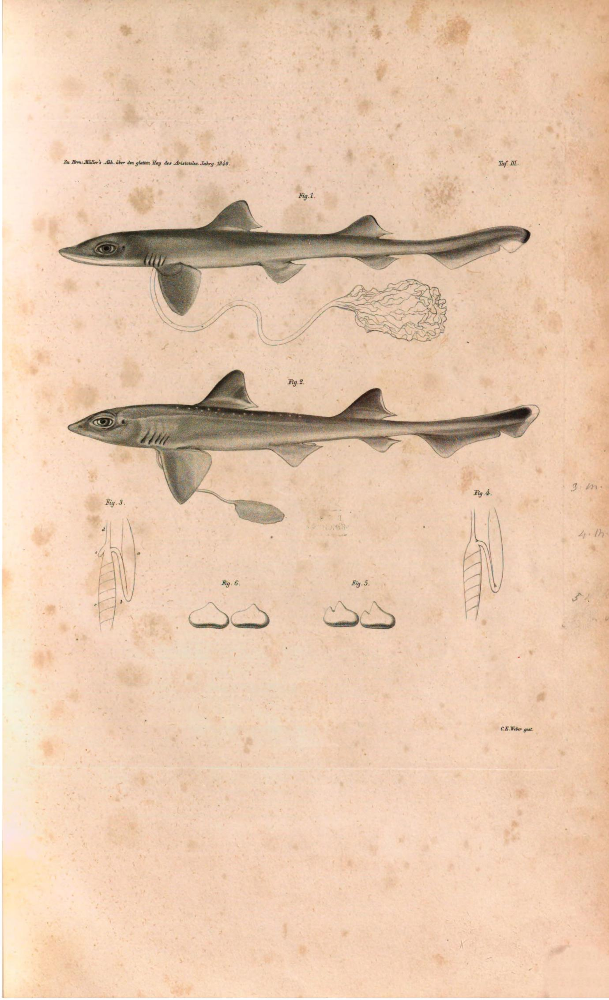
Taf. IIIMustelus laevis — the yolk-sac placentaJohannes Müller (1842), Taf. III
Aristotle described it; for two thousand years it was thought an error, until Müller dissected it. Patron specimen for trusting careful observation over received opinion.
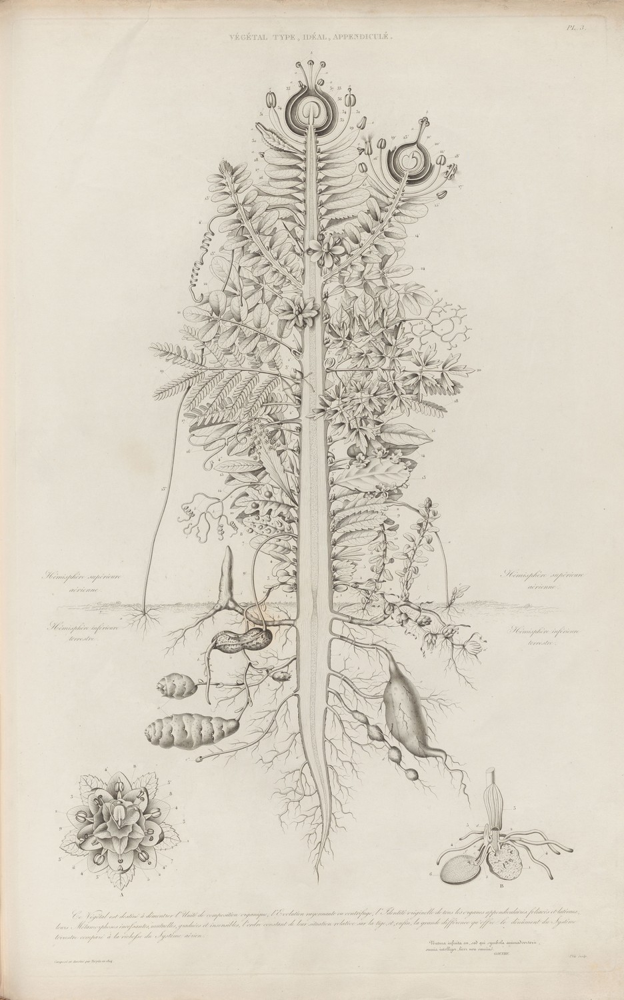
Pl. 3Végétal type, idéal, appendiculé — the UrpflanzeTurpin (1837), after Goethe
Hung as a standing instruction: exhibit types, reserve judgement on descent until the morphology is in hand.
Plates held in this repo at docs/media/, as catalogued in the
museum-illustrated Thompson (1913) edition.
Species portraits above are tracked library photographs from datasets/species_gallery/
(iconic atlas), staged into
docs/media/specimens/ at build time.
XI. The Evolution Gallery — in preparation
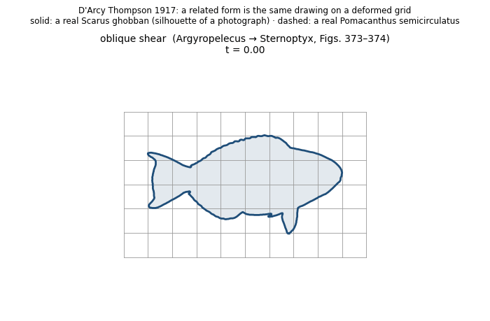
Not yet accessionedOn Growth and Form, ch. XVII — transformationsThompson (1917)
This room is roped off. Forms in this collection will be allowed to evolve into one
another — by coordinate transformation, not by costume — when enough morphology has been captured to carry
the deformation honestly. The specimens above are being pinned for precisely that day.
* Slot-agent Lean/nanopub counts are as recorded at dispatch time; per issue #268 the
overnight-slot Lean modules are placeholder templates, not mechanism proofs, so treat
lean_theorems_proved-style tallies from those records as claims, not verifications.
Telemetry runs span 2026-10-18T18:03:18.181Z – 2026-10-20T02:35:07.105Z.